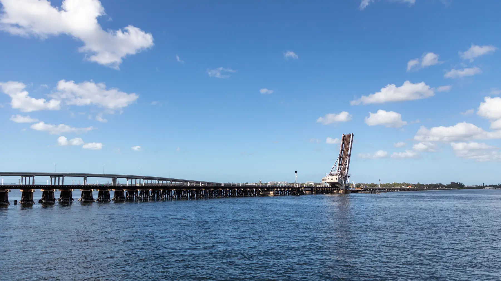

East County and Lakewood Ranch
Waterlefe
Manatee County, Florida
Photo Paul R. Burley, via Wikimedia Commons · Creative Commons Attribution ShareAlike 4.0
Waterlefe sits on the Manatee River in northeast Bradenton and is one of the few communities in the county to combine a golf course with a marina offering river access. It was developed beginning in the late 1990s.
The marina gives boaters a route down the Manatee River to Tampa Bay and the Gulf beyond, which is unusual for a golf community this far inland.
- To the Beach
- About 35 to 40 minutes
- Typical Range
- [[FILL IN: pull from Stellar MLS]]
- What Was Built Here
- Single family, maintenance free villas, golf and river frontage
The Details
What defines Waterlefe.
- A community marina with access to the Manatee River
- An eighteen hole golf course running through the community
- River frontage and preserve along the northern edge
- A river club with dining and fitness
- Both single family homes and maintenance free villas
Questions
What people ask about Waterlefe.
Is golf membership required?
Membership structures at golf communities change over time and are set by the club rather than by the real estate. Whether a given property carries a mandatory membership, an optional one, or a separate equity requirement needs to be confirmed in writing for that specific property before you commit.
How usable is the marina for a larger boat?
That depends on slip availability, draft, and bridge clearances between the marina and open water on the Manatee River. Those constraints are specific enough that anyone buying here for the boating should verify them against the actual vessel rather than the brochure.
What are the assessments like?
Waterlefe has both a CDD and community association dues, and there are additional costs tied to the river club. The full picture varies by property type, since villas and single family homes carry different maintenance obligations. Jennifer pulls the complete number rather than the headline HOA figure.
Nearby